Wookie Productions
Audio-reactive music videos for my YouTube channel, made in After Effects since 2015. The channel has passed 165,000 views, and one remix video has more than 150,000.
QA Chapter Lead at Salonkee, Luxembourg
PASS leads four QA engineers at SalonkeePASS replaces repetitive manual work with scripts and automated testsPASS co-founded a clothing brand about mental healthPASS speaks 5 languages4 passed, 0 failed
I lead quality. That means deciding how a team tests, what gets automated, and which bugs are worth stopping a release for.
I came to QA the long way: freelance design and marketing, then business process analysis. So I look for the manual work that slows people down and automate it. At Salonkee I built Cypress tests that run in CI/CD, kept the B2C app launch moving, and mentored teammates.
I studied Digital Media and Interaction Design, so I also care whether a product feels right to use, not only whether it passes.
Before QA I worked in design and marketing. Outside work I build my own product, take photos, make music visuals and design things.
A peer-to-peer marketplace for buying, selling and sharing locally in Luxembourg. It is live, and I built it end to end.

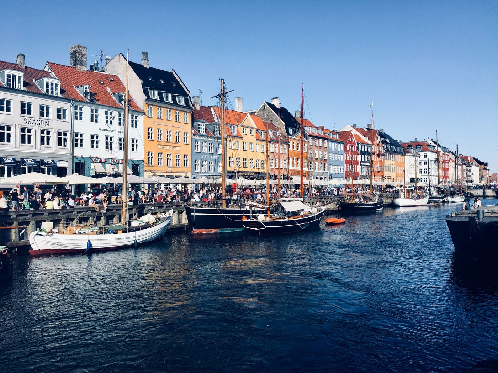
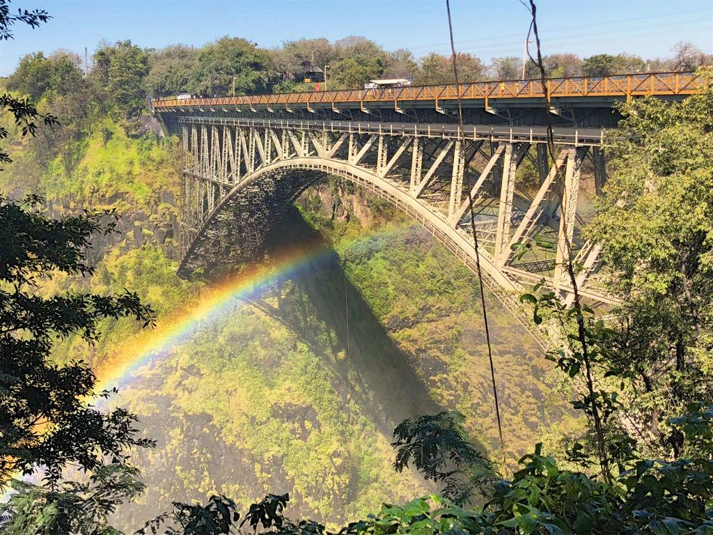
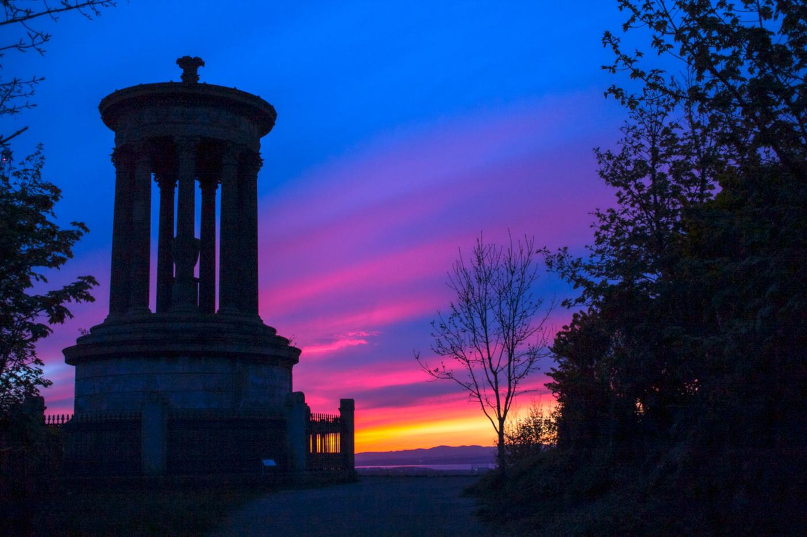
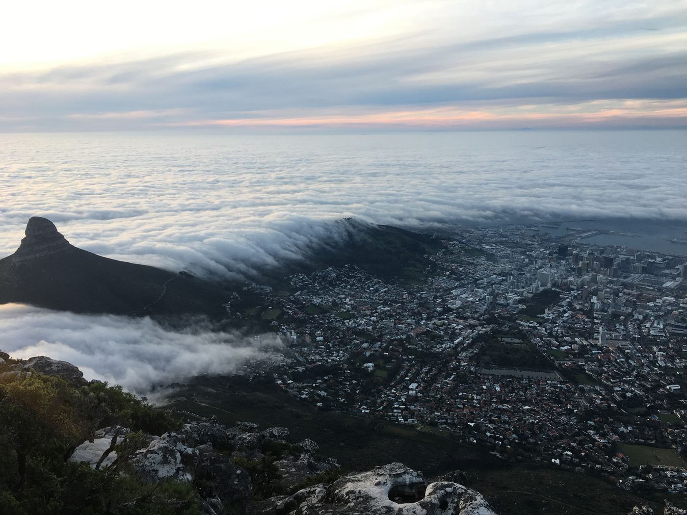
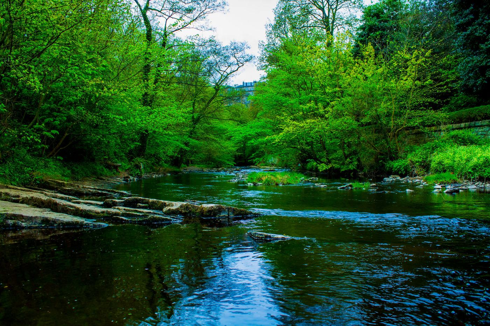
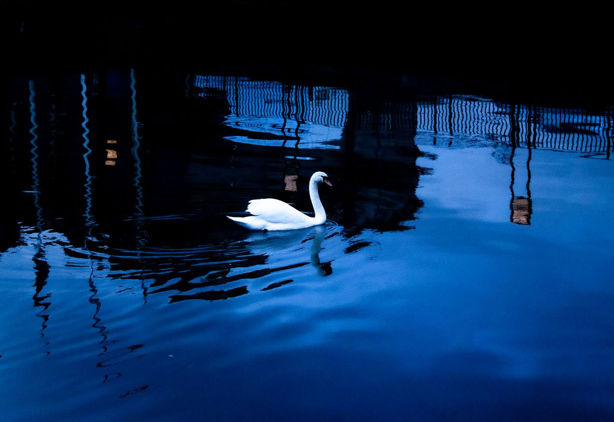
Audio-reactive music videos for my YouTube channel, made in After Effects since 2015. The channel has passed 165,000 views, and one remix video has more than 150,000.
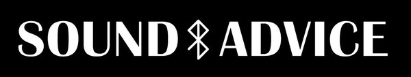
A lifestyle and clothing brand I co-founded in 2020. It set out to start positive conversations about mental health and to point people to support. Its motto was: sometimes it's okay if all you did today was dance.
Posters, logos and campaigns for bars, venues and other clients around Edinburgh.
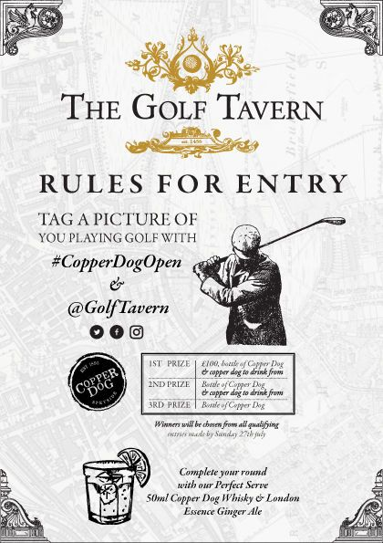
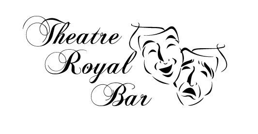
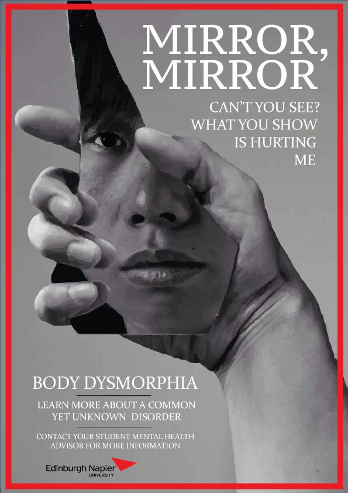
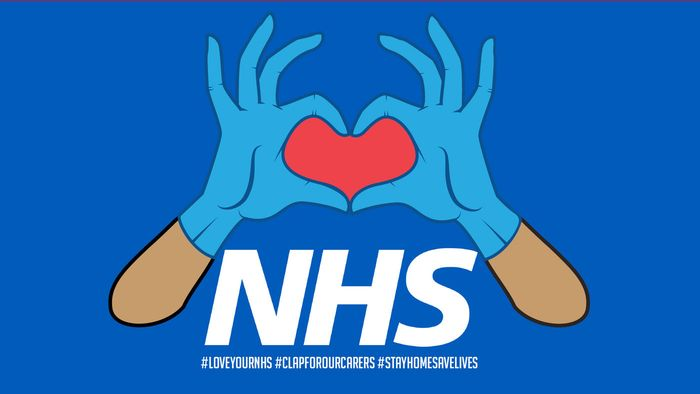
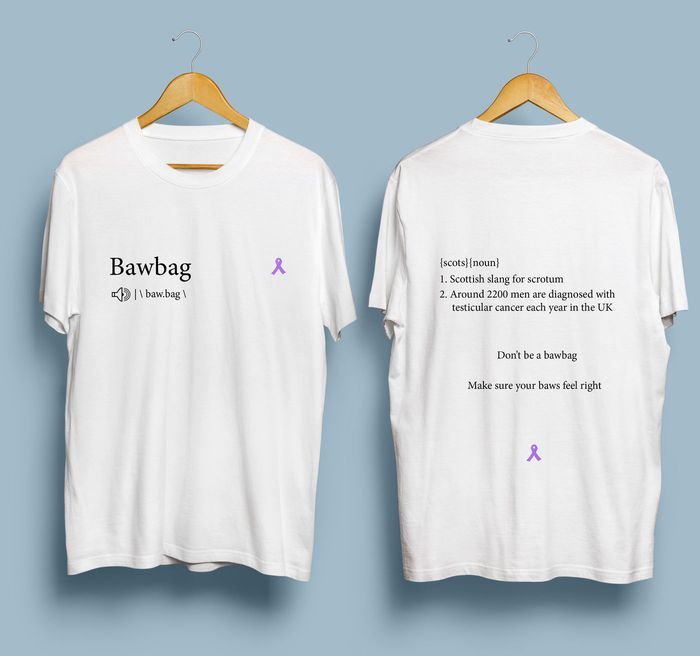
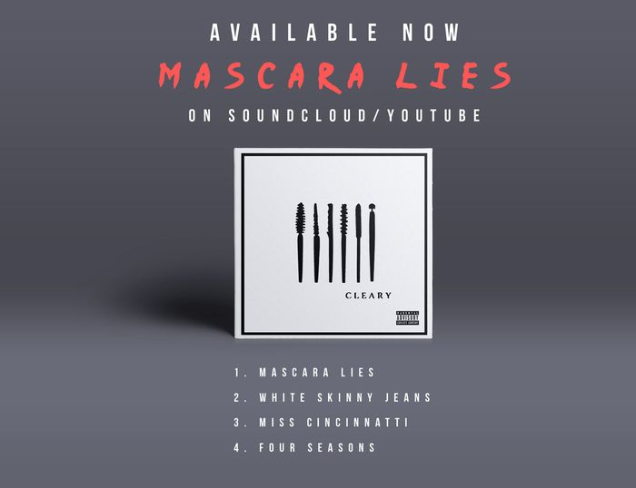